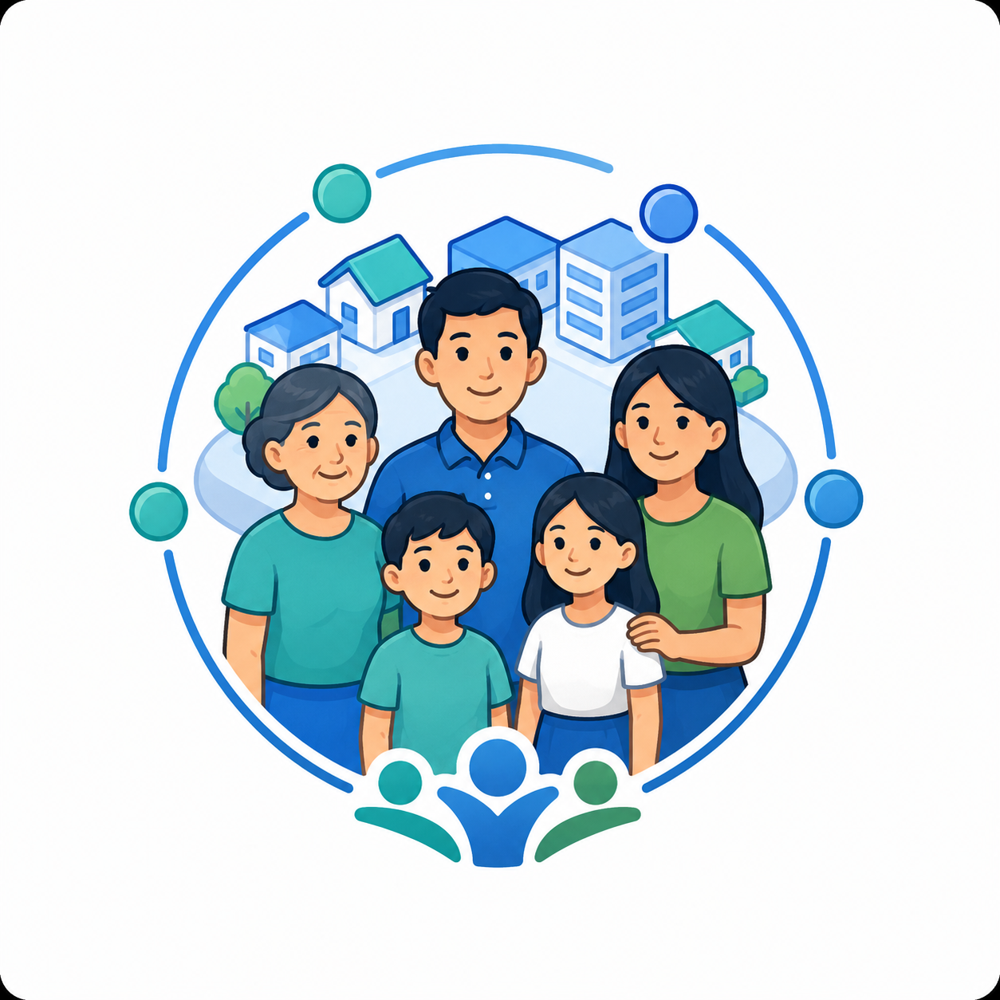
Citizens
Access help, announcements, communication, and essential services through the local PBB network.
Offline-first community resilience infrastructure
Project Bantay Bayan helps barangays and local governments keep essential services available through local digital nodes, even when internet access is weak, intermittent, or unavailable.
Local services should not stop just because the internet stops.
Core promise
PBB brings essential digital services closer to the community. Through local nodes, barangays can keep emergency reporting, local communication, maps, health workflows, learning access, and coordination tools available even when internet access is weak or unavailable.
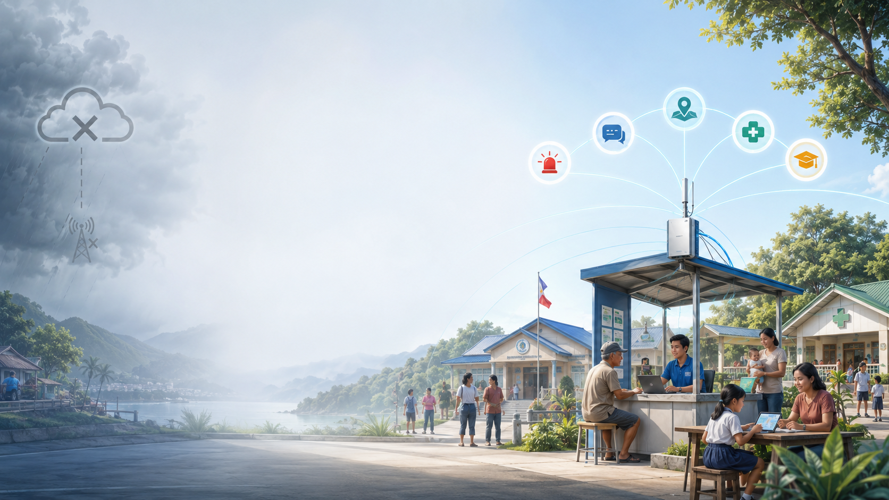
Stakeholder outcomes
PBB supports everyday local communication, public service work, and operational readiness.

Access help, announcements, communication, and essential services through the local PBB network.
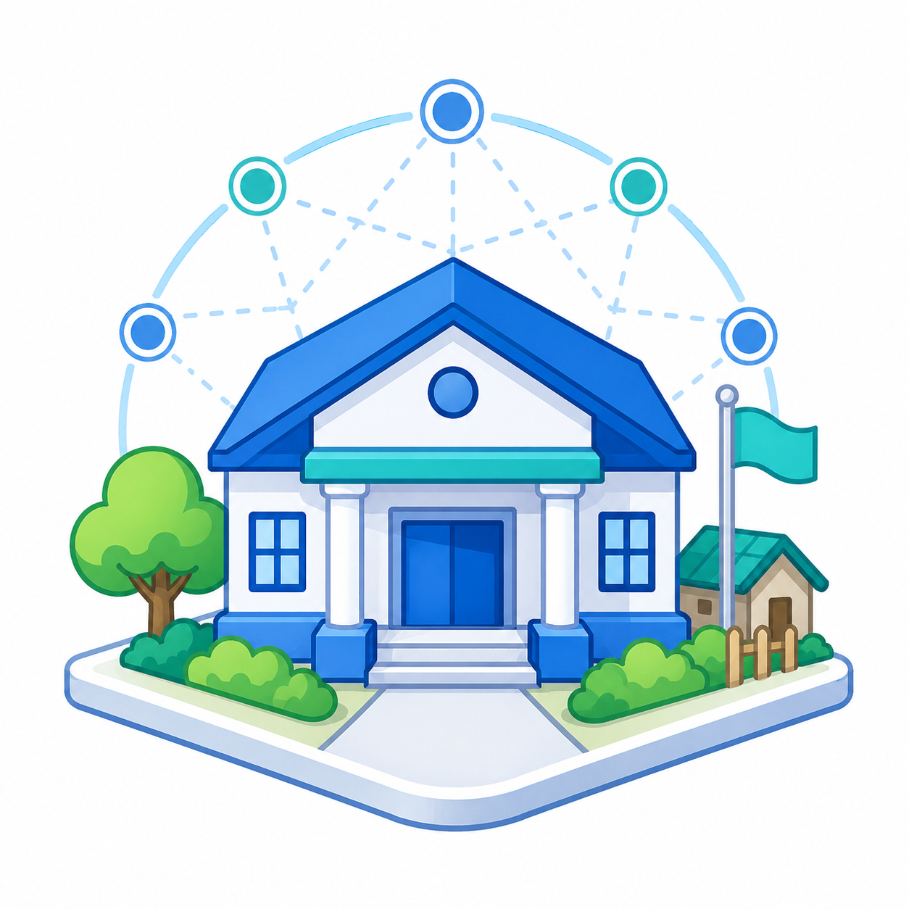
Operate a local digital front desk for reports, advisories, maps, and coordination.
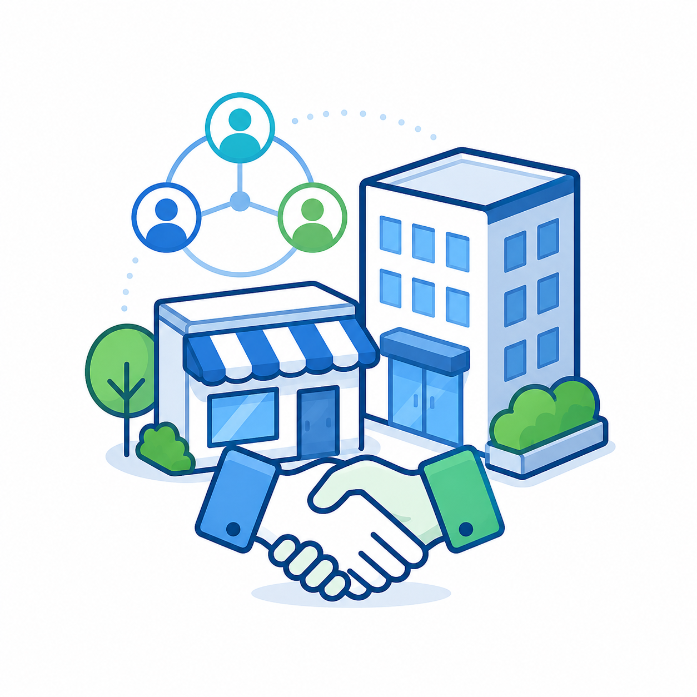
Support local continuity efforts and contribute resources during disruptions.
See structured reports, support requests, and service status from the barangay level.
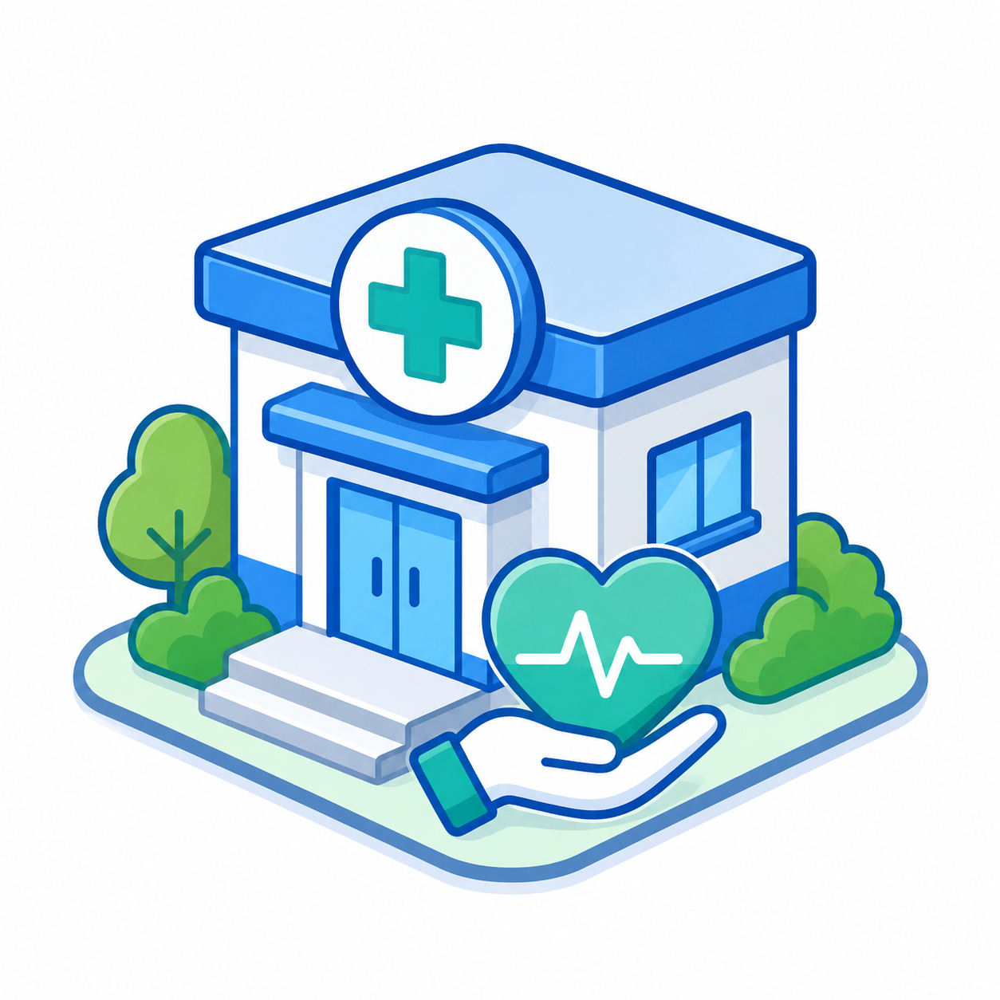
Keep basic health workflows and continuity-of-care support available locally.
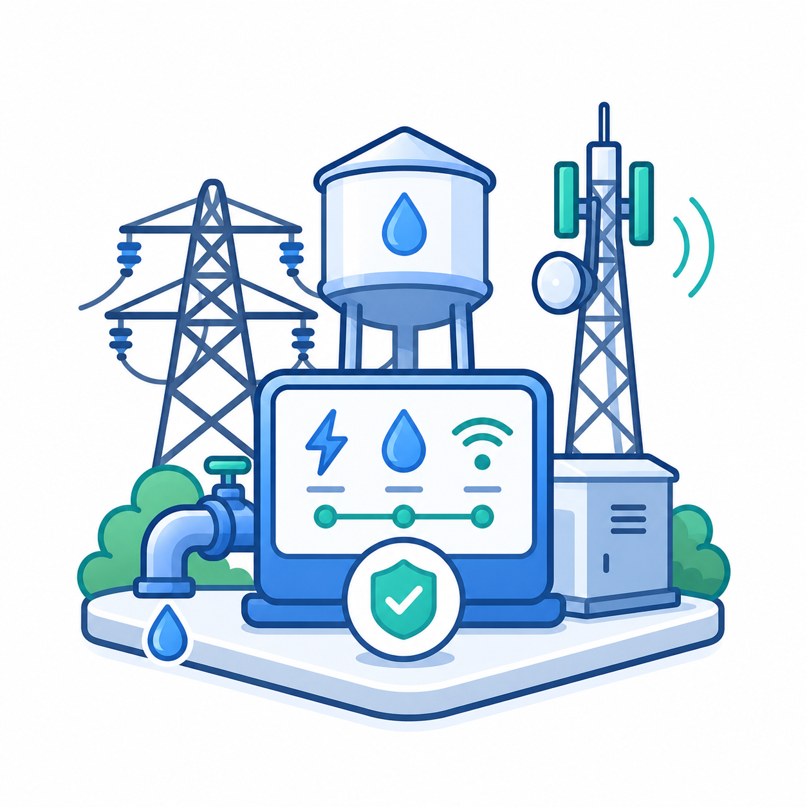
Receive clearer incident context when events may affect essential services.
Use local learning and preparedness content even when mobile data is unreliable.
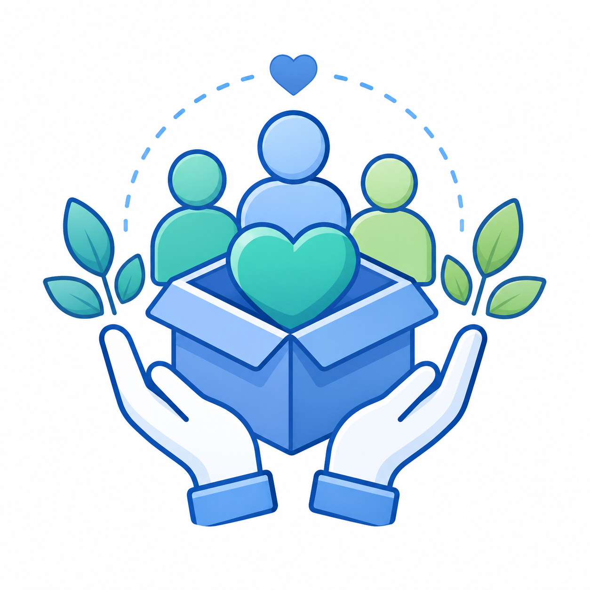
Fund a living resilience capability that communities can use before and during emergencies.
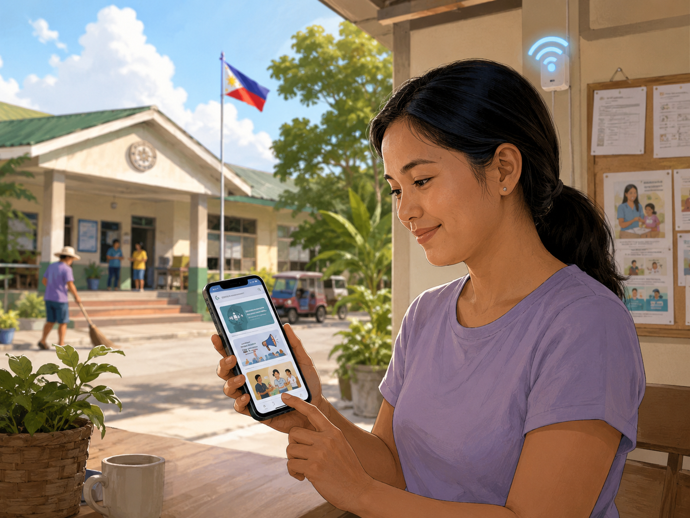
Daily-use adoption
A citizen uses the local PBB network for announcements, health schedules, learning content, and community messages. When an emergency happens, the familiar network becomes the reporting and coordination channel.
PBB earns its value by being useful before an emergency, reliable during an emergency, and still relevant after the emergency.
Local service layer
PBB is not a single app. It is a local community infrastructure layer with practical public-service modules.
Citizen reporting, operator handling, command visibility, SITREPs, and support requests.
Announcements, local chat, official rooms, moderation, and community messaging.
Local health-center workflows, patient context, appointments, and continuity support.
Local learning content, preparedness lessons, and youth engagement tools.
Structured incident context for electricity, water, telecommunications, and other essential services.
Local accounts, maps, communication, sync, monitoring, and setup foundations.
Offline-first operations
PBB runs essential services locally first. When internet is available, nodes can synchronize reports and updates upstream. When internet is unavailable, the local node continues serving citizens, operators, responders, and local service workers inside the community network.
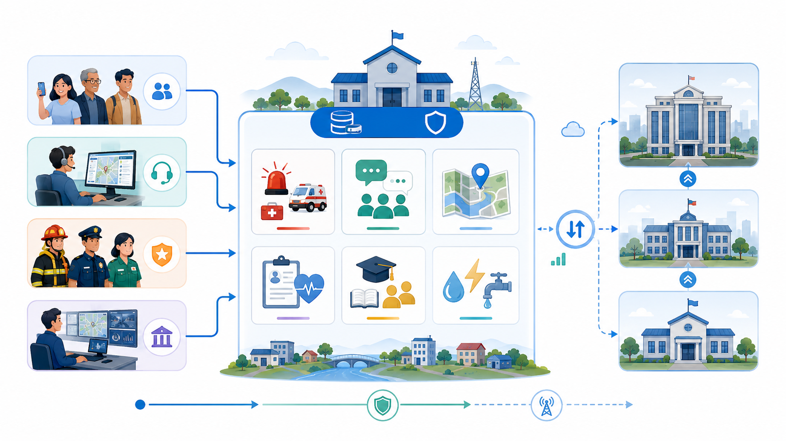
Sustainable deployment
PBB is software-first and service-supported. Communities are not asked to buy a traditional software license upfront.
Each active software node can be supported through a predictable monthly managed service fee that helps keep the PBB software ecosystem configured, updated, supported, and operationally useful.
View deployment modelPilot readiness
PBB is currently in an integrated platform and pilot-readiness phase. Core software modules are already implemented and connected, while deployment runbooks, security policies, retention rules, and scale-readiness work continue to be hardened.
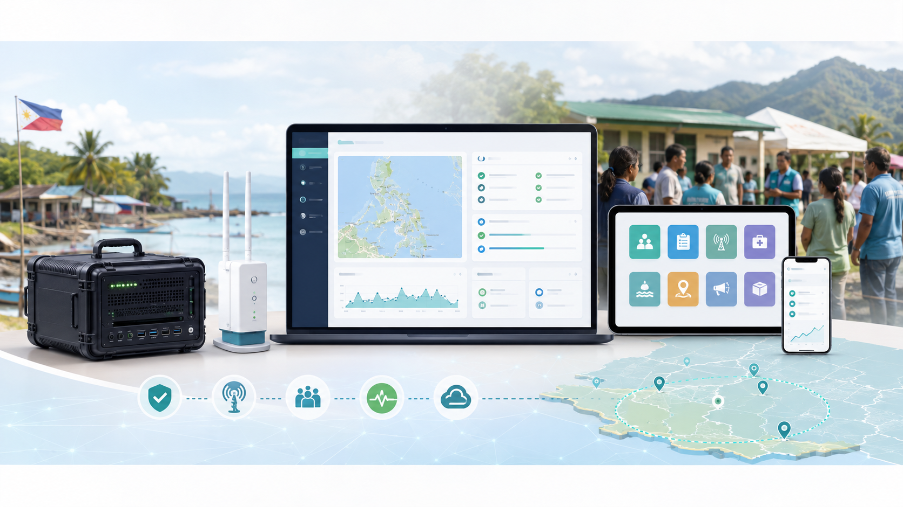
Readiness snapshot
A concise view of current maturity across platform, deployment, governance, and pilot-readiness areas.
Technology foundation
Project Bantay Bayan is powered by Wizaya technology modules developed for offline-first local-node deployments.
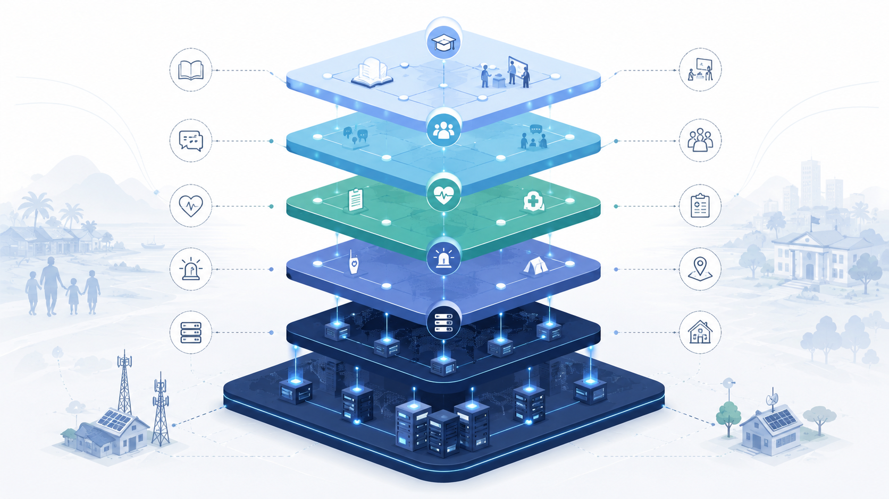
Partner with PBB
PBB is designed for communities, LGUs, institutions, donors, and partners who want essential local services to continue even when connectivity is unreliable.
Briefing request
Use the form below to request a briefing, explore partnership, discuss a pilot node, or receive implementation updates.